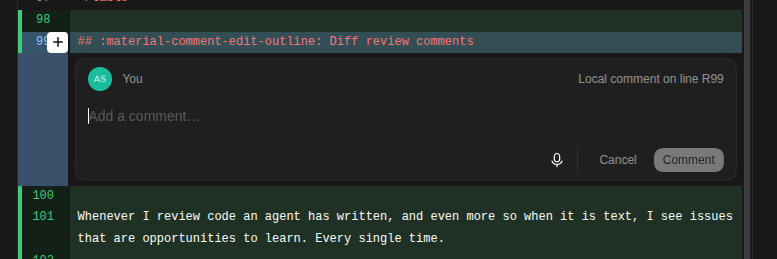

AI agent tools
A very subjective comparison of the user interfaces of AI agent systems by parameters I find influencing whatever I am doing with them, which is mostly writing text or code.
Legend
Supported
Maybe not
Diff review comments

Whenever I review code an agent has written, and even more so when it is text, I see issues that are opportunities to learn. Every single time.
These issues can lead to new checks, linters, guidance, or skills. I want to comment on a specific line in the diff and give the agent feedback there. Often, I immediately ask it to /retro the issue: my skill turns a mistake into improved guidance.
Plan mode
Robert Martin argues that large specifications written up front bring back the problems of waterfall. I agree, and I no longer write specs. I do write plans quite a bit.
One reason is to split the work: a smarter agent can write a plan, and a team of lighter models can implement it. This resembles the orchestrator–workers pattern, where an agent divides work among other agents.